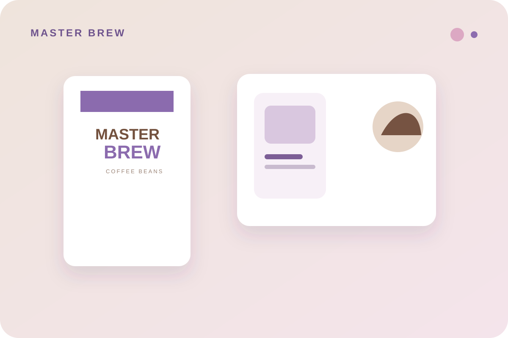
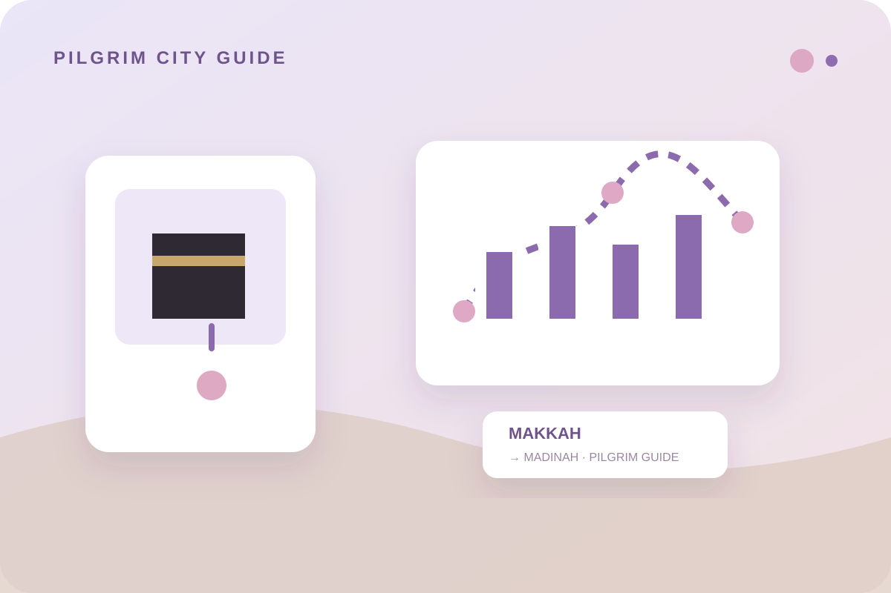
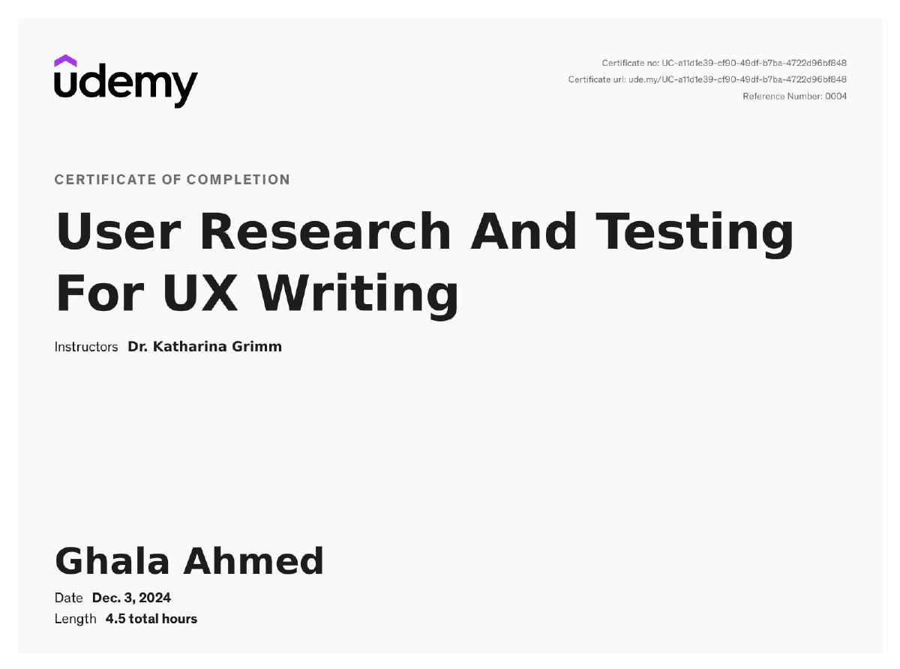
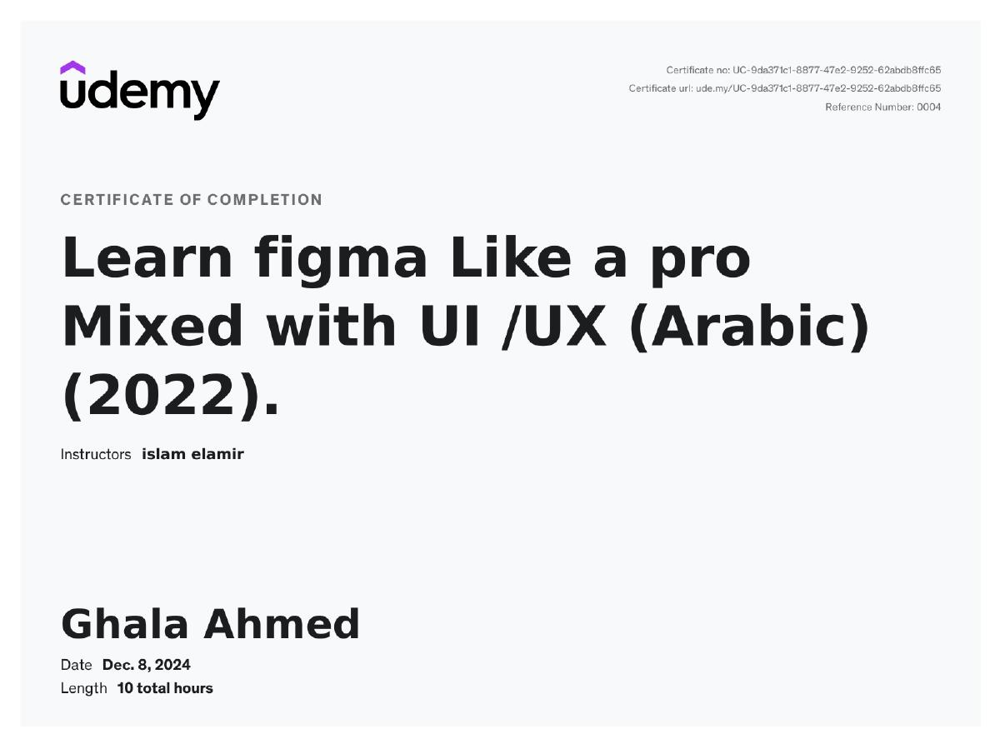
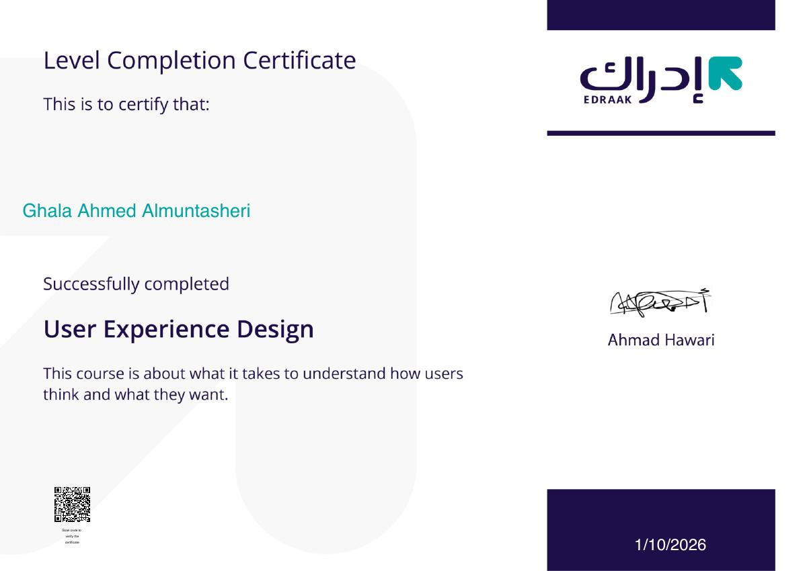
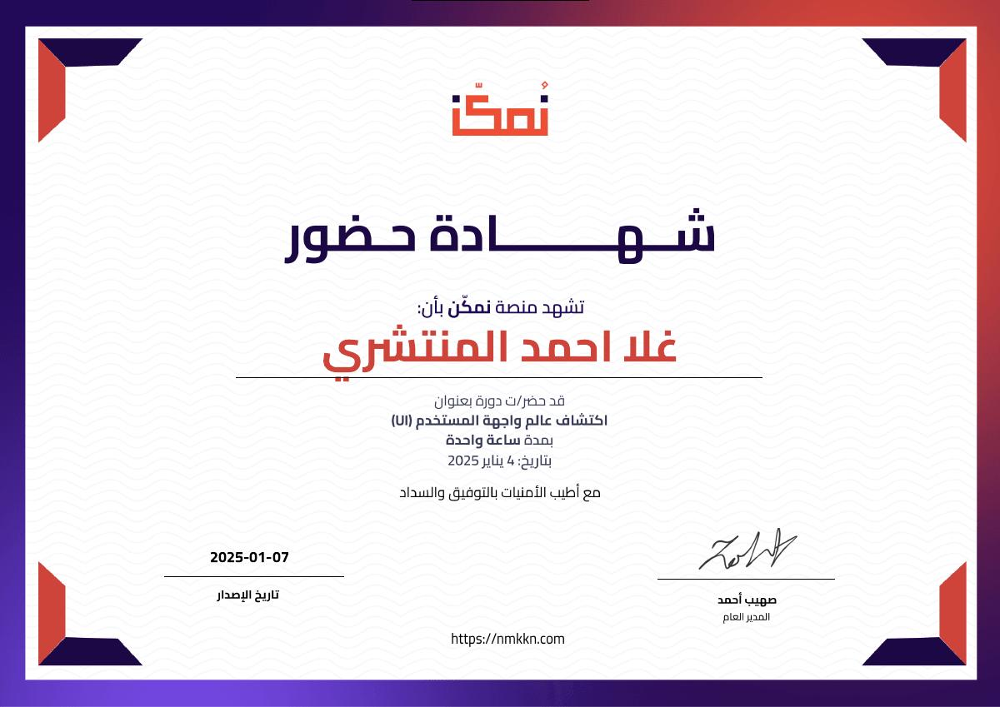
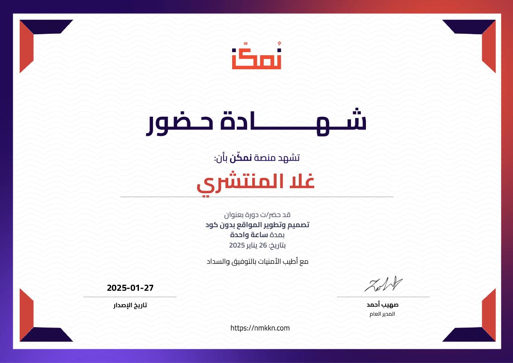
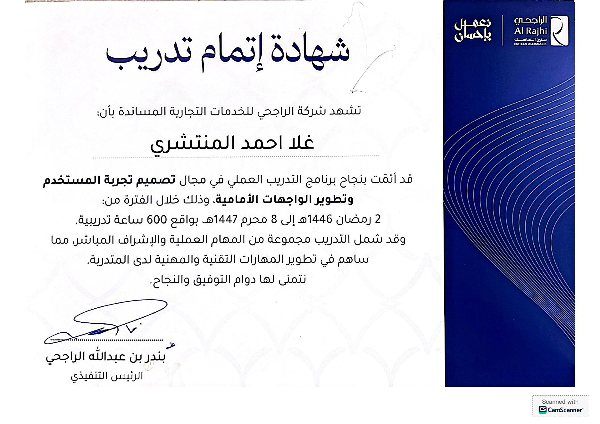
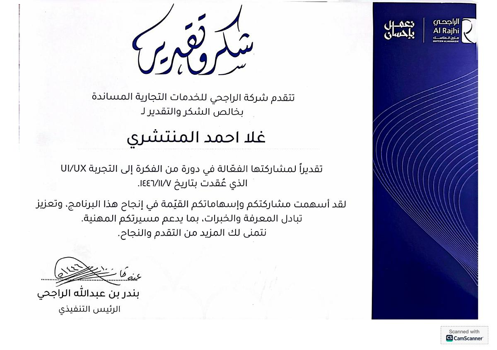
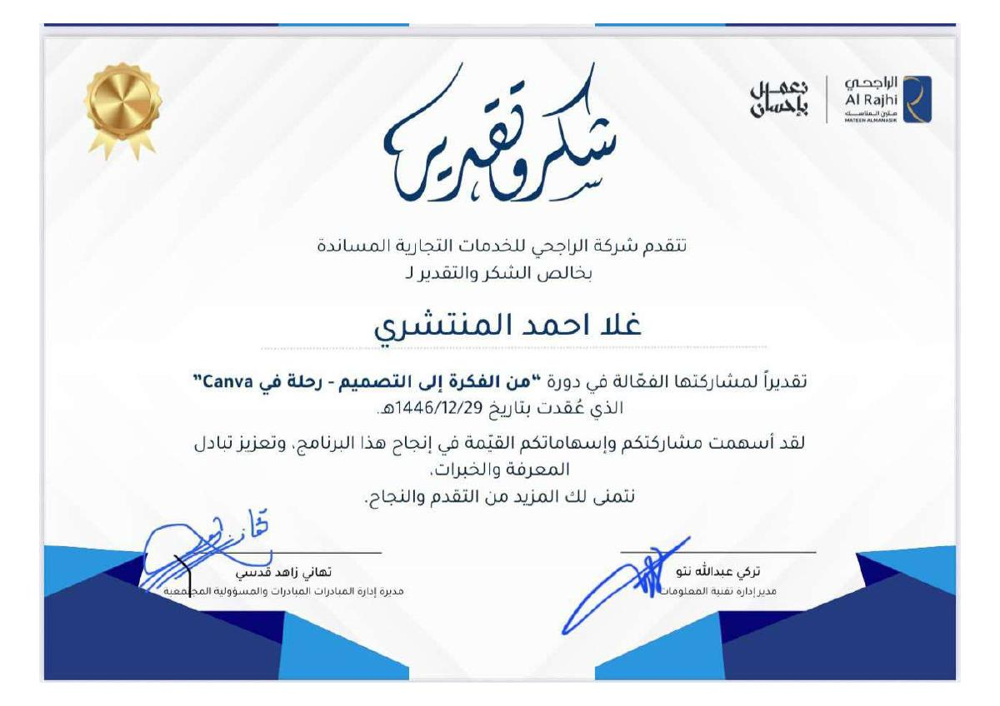

UX & Research
User Research · Interviews · Personas · Journey Mapping · Usability Evaluation · Heuristic Evaluation · Accessibility
UX/UI DESIGNER · HUMAN-COMPUTER INTERACTION
I combine interface design, user research, accessibility, and creative problem-solving to make digital experiences easier to understand and use.
01 — About me
I’m Ghala, a UX/UI Designer with a background in Human-Computer Interaction.
My main focus is interface design, while my HCI background helps me work across user research, problem-solving, user understanding, and accessibility.
I care about clarity, creativity, and making the design fit the product or service it represents. I also enjoy adding a personal design fingerprint without losing the identity of the brand.
02 — Selected work
A family-centered healthcare experience designed to make monitoring medications, appointments, and health information easier.
View case study ↗

A usability evaluation of quick-donation experiences across three digital platforms.
View project ↗
UX analysis of Madar, the pilgrim-focused app of Al Rajhi Supporting Services.
View project ↗
An e-commerce interface for coffee beans and brewing tools.
View project ↗
A 40% complete concept for helping pilgrims discover restaurants and leisure places in Makkah and Madinah.
View project ↗03 — Skills
User Research · Interviews · Personas · Journey Mapping · Usability Evaluation · Heuristic Evaluation · Accessibility
UI Design · Wireframing · Prototyping · High-Fidelity Design · Visual Design · Figma
HTML · CSS · JavaScript · MySQL · Database Design
Nielsen’s Heuristics · SUS · Think-Aloud · KLM / TLM / GOMS · RealEye · Power BI
04 — My approach
Start with the people, their needs, context, and the problem behind the product.
Explore different directions, compare possibilities, and identify what can be clearer or more accessible.
Translate insights into interfaces that balance usability, visual clarity, creativity, and the product’s identity.
Use feedback and evaluation to improve the experience and resolve what does not work yet.
05 — Background
Umm Al-Qura University · College of Computing. Graduated with a Very Good overall grade and Second Honors.
600-hour cooperative training focused on UX analysis, digital service improvement, and practical design work.
06 — Certificates & learning

A 4.5-hour course focused on user research, testing, and UX writing.

A 10-hour course combining Figma skills with UI/UX workflows in Arabic.

A course about understanding how users think and what they want.

An introductory session exploring user interface concepts and the UI field.

An introductory course on creating and developing websites without coding.

Practical training focused on UX design and user experience at Al Rajhi Supporting Services.

A practical UI/UX activity delivered during training in collaboration with an orphanage.

A practical Canva design activity delivered for company employees during cooperative training.
07 — Let’s connect
Open to design opportunities, collaborations, and interesting digital problems.
lgir1056@gmail.com ↗